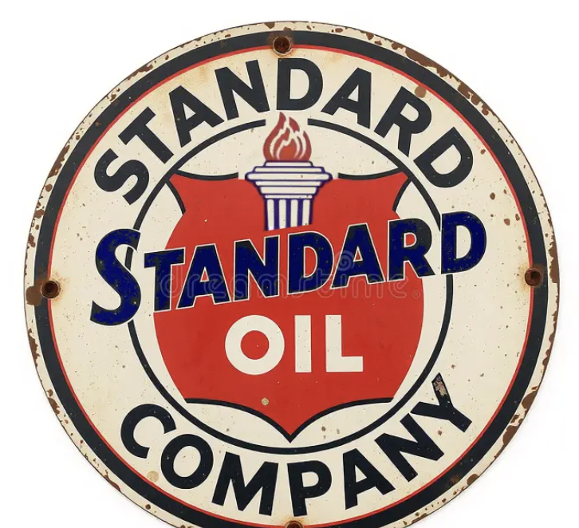
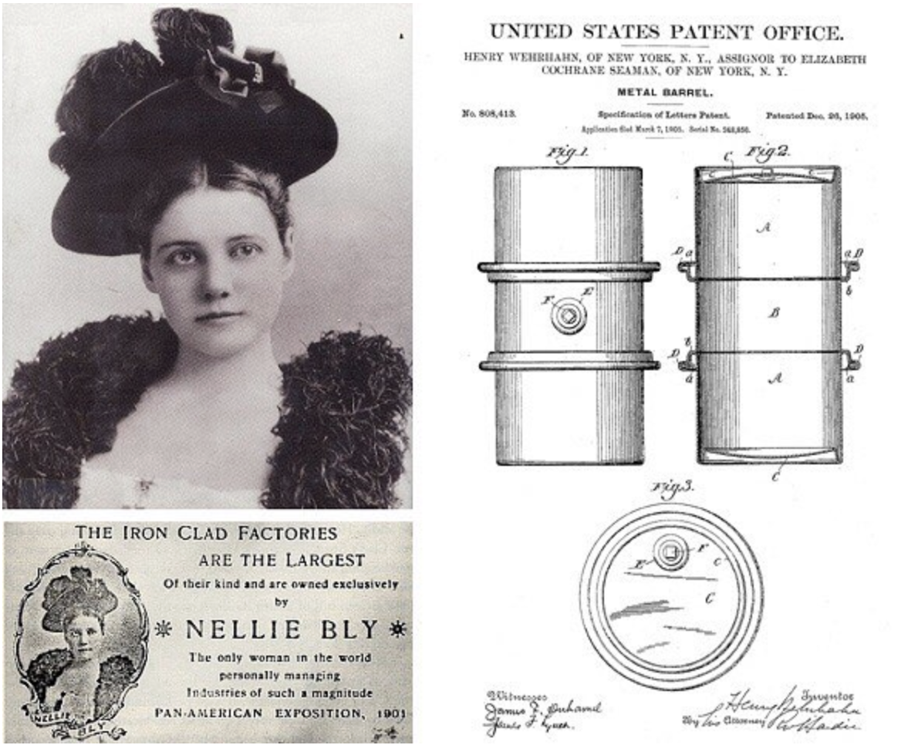
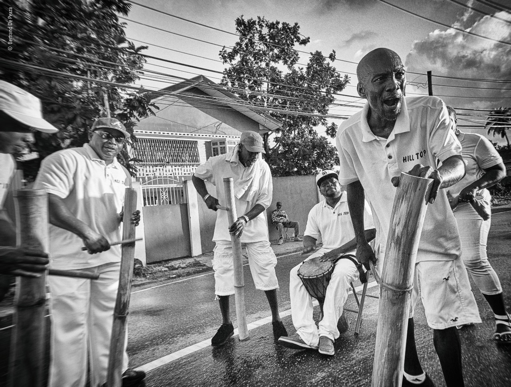
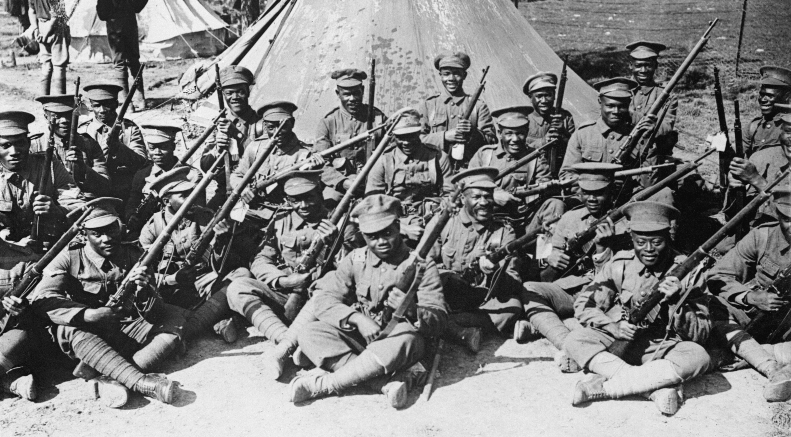
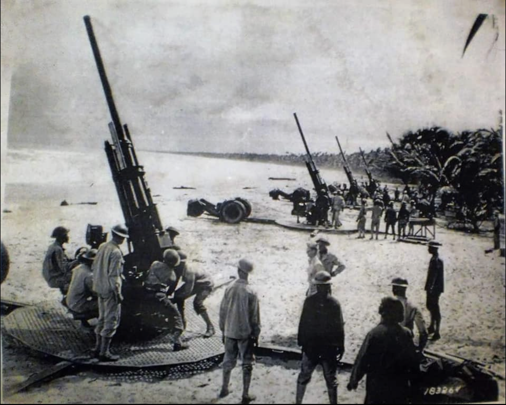

OUR STEELPAN HISTORY

📜 Early Roots
• 1700s–1800s: Enslaved Africans brought strong drumming traditions to Trinidad. After emancipation in 1834-38, African-descended communities used percussion in Carnival, though colonial authorities often restricted drumming.
• 1890s: Tamboo-bamboo ensembles emerged, using bamboo sticks of varying lengths to mimic musical voices (soprano, alto, tenor, bass). These became central to Carnival street music.
🔨 Transition to Metal
• 1930s–1940s: Bamboo was gradually replaced by metal objects—garbage bins, biscuit tins, paint cans, brake drums, and other discarded items. These “metal bands” created louder, more resonant sounds.
• Innovators like Ellie Mannette began experimenting with tuning oil drums, hammering the surfaces to create distinct pitches. This marked the birth of the modern steelpan.
🎶 Formal Development
• 1940s–1950s: Steelbands became organized, with instruments tuned to scales and capable of playing melodies and harmonies.
• 1950s onward: The instrument gained recognition beyond Carnival, entering concert halls and international festivals.
🇹🇹 National Recognition
• 1992: Recognised as the official national musical instrument of Trinidad and Tobago by then-Prime Minister Patrick Manning.
• 2023: The United Nations General Assembly proclaimed August 11 as World Steelpan Day, highlighting its global cultural significance.
• 2024: The National Musical Instrument Bill was passed unanimously in the House of Representatives on July 3, 2024, and in the Senate on July 5, 2024, formally declaring the steelpan as the National Musical Instrument of Trinidad and Tobago.
🌍 Global Impact
• Steelpan spread internationally through migration of Trinidadians and their Carnival culture, especially in London’s Notting Hill Carnival and competitions like Panorama.
• Today, pannists perform worldwide, and the instrument is taught in schools and universities, symbolizing Trinidad and Tobago’s creative legacy.
AN OIL DRUM? REALLY?
In 1900 the world was seeing continuous growth in the supply of oil. Drilling was taking place all over, from Texas to Persia (modern-day Iran). However, the current means of transporting oil — commonly known as the “Bayonne Barrel” after the New Jersey manufacturer producing the container — was heavy and not entirely leakproof.The demand for a better means of transporting oil grew.
 Enter Nellie Bly. Elizabeth J. Cochran Seaman (Nellie Bly) was a famous journalist who investigated conditions at an infamous mental institution, made a trip around the world in under 80 days, and her Iron Clad Manufacturing Company manufactured the first practical 55-gallon oil drum.
Enter Nellie Bly. Elizabeth J. Cochran Seaman (Nellie Bly) was a famous journalist who investigated conditions at an infamous mental institution, made a trip around the world in under 80 days, and her Iron Clad Manufacturing Company manufactured the first practical 55-gallon oil drum.

Standard Oil Company introduced a steel version of the common 42-gallon oil drum in 1902. It had the traditional cask-like appearance. Although stronger than wooden barrels, the new barrel could still leak. But Nellie Bly's company had a solution. In 1894, Bly had married wealthy industrialist Robert Seaman, owner of the Iron Clad Manufacturing Company. At the time, Iron Clad produced milk cans, riveted boilers, tanks, and “The Most Durable Enameled Kitchen-Ware Made.” After Seaman died in 1904, Nelly became the sole owner of the company.

Her employee, Henry Wehrhahn, received two patents that would lead to the modern steel barrel, the 55-gallon oil drum. Wehrhahn, a machinist, became superintendent of the Iron Clad Manufacturing Company in 1902. He received a patent for a straight-sided steel drum, with rolling hoops, a side or top fitting, and a means for readily detaching and securing the head of a metal barrel.Wehrhahn assigned his patent to Nellie Bly, and that drum design is almost the exact configuration still used today. The main difference was that the straight-sided cylinder design of the early 1900’s had metal rolling hoops that were separate from the body; the modern-day design features hoops that are attached to the drum itself.
WHY TRINIDAD, THOUGH?

The steel band developed directly out of Tamboo-Bamboo bands, which provided Carnival music for the lower classes in post-Emancipation Port of Spain after a 19th-century British colonial law banned the use of African-type skin drums. But the bamboo tubes pounded repeatedly on the ground splintered and broke, so the tamboo-bamboo players began looking for other instruments. In the 1930s, they started migrating to metal household items such as soap boxes, biscuit tins, and dustbins as sturdier, longer-lasting instruments.
Now, oil had been discovered in southern Trinidad in 1866, and by the early 1900s there were several oil companies operating in the country. In fact, Trinidad was a major supplier of oil to Britain during World War I (1914-1918), producing over 1 million barrels of oil in 1914.

All that oil was stored in Nellie Bly’s 55-gallon drums. When ships headed off to fight the war in Europe, the empty drums were discarded in the ports and along the roadsides. They were plentiful and free, and the players soon realised they could be turned into steel pans of various lengths by cutting cross-sections into the 55-gallon metal container. The pans were then tuned to different pitches by indenting and tempering the metal surface.Thus, the 55-gallon steel drum was born, and it is generally accepted that the steel pan was first made around 1939 in Trinidad, just as WWII got seriously underway.
By the time the United States entered World War II in late 1941, Trinidad’s oil was extremely important for British aeroplanes and ships.

The US established over 200 bases in Trinidad and Tobago, the most well-known being the Chaguaramas peninsula in the west, Docksite (south of Wrightson Road in Port of Spain), and Wallerfield in the east. In fact, the entire country became known as “Naval Base Trinidad”, and was the main training centre for US troops preparing for war. Because Carnival celebrations were banned during wartime (1939-1945), the first appearance of steelbands on the road was not until 1947.
And the Trinidad All-Steel Pan Percussion Orchestra (TASPO), formed to attend the Festival of Britain in 1951, was the first steelband whose instruments were all made from oil drums.
The last surviving member of TASPO, Sterling Betancourt, passed away in June 2026 at the age of 96.
THE 55-GALLON OIL DRUM
 A standard 55-gallon drum is approximately 35 inches (89 cm) tall with about a 23-inch (58 cm) diameter. It is usually made from low-carbon (18-gauge) steel, and features reinforced rolling hoops/beads and a double-seamed top and bottom. The drum can have two types of closures: tight head for liquids, and open head for solids or thick pastes.
A standard 55-gallon drum is approximately 35 inches (89 cm) tall with about a 23-inch (58 cm) diameter. It is usually made from low-carbon (18-gauge) steel, and features reinforced rolling hoops/beads and a double-seamed top and bottom. The drum can have two types of closures: tight head for liquids, and open head for solids or thick pastes.
Further Reading
→ Mittcott → Read Historical Archive → Steelpan (Wikipedia) → Nellie Bly Oil Drum → Petro History → Watch Video → Sterling Betancourt Video → TASPOThink you've mastered this topic?
Test Your Knowledge →